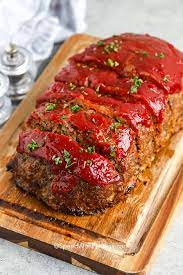

Meatloaf Recipe

Description
The Meatloaf Recipe you must try! Below you will find the following instructions to make this delicious recipe!
Ingredients
- 1/2 medium onion diced
- 1 teaspoon butter
- 2 eggs
- 3/4 cup milk
- 3/4 cup italian breadcrumbs
- 2lbs lean ground beef
- 1 tablespoon ketchup
- 1 teaspoon Italian Seasoning
- 2 tablespoons fresh parsley
- 1 teaspoon kosher salt & 1/2 teaspoon black pepper
Meatloaf Sauce
- 1/2 cup chili sauce
- 1/2 cup ketchup
- 2 tablespoons brown sugar
Steps
- Preheat the oven to 350°F. Line a rimmed baking pan with aluminum foil and spray with cooking spray.
- In a small pan, cook onions in butter over medium low heat until tender. Let them cool completely.
- In a medium bowl, combine eggs, milk, and breadcrumbs. Let the mixture sit for 5-10 minutes.
- Add the ground beef, cooked onions, ketchup or chili sauce, Italian seasoning, parsley, and salt & pepper to the bowl. Mix until just combined.
- Form a 8"x4" loaf on the prepared baking pan and bake for 40 minutes.
- While the meatloaf is cooking, combine the chili sauce and ketchup (and brown sugar if using). Spread mixture over the meatloaf and bake for an additional 10-15 minutes or until cooked through and the meatloaf reaches an internal temperature of 160°F. Broil for 1-2 minutes if desired.
- Let the meatloaf rest for 10 minutes before slicing and serving.